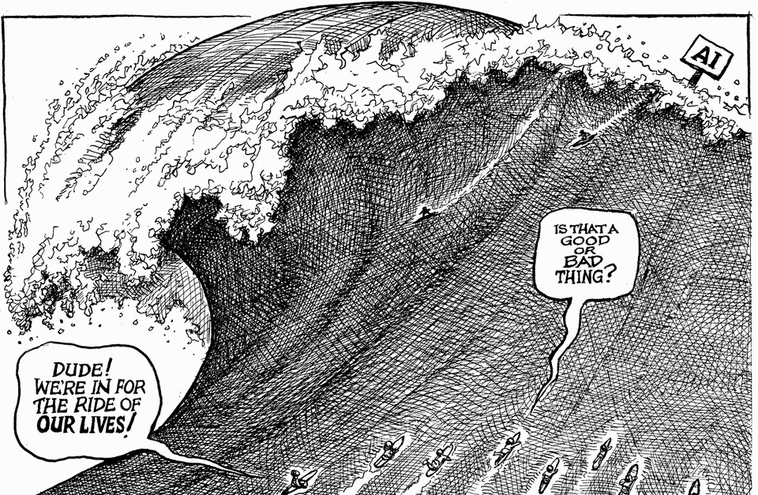

The world this week
Cartoon: AI tsunami
A lighter take on the news

Oct 15th 2026
Dig deeper into the subject of this week’s cartoon:
What if the machines take over science?
A no-rules approach to AI is mad politics and worse policy
How the AI boom could worsen the rich world’s fiscal crunch
You can see previous ones here.